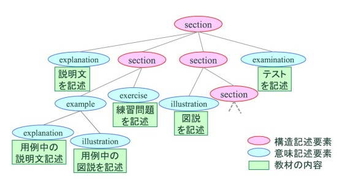

教材記述言語X-TDL
ここでは, 教材記述言語X-TDL で記述された学習コンテンツの内容モデルについて述べる. X-TDL の特徴として以下のようなものが挙げられる.- 教材資源の論理構造を木としてXMLで記述.
- 木構造の各部分木は内容上の上下関係や構成上の意味的なまとまりを表す単位.
- 学習者に提示される内容は, XHTML をベースにした記述
- 木構造の任意の部分木を新たな教材として再利用可能

図1: X-TDL 教材構造の概念図
一般的な書籍での章節や単元に対応するようなまとまりを構造記述要素<section>で表現する. <section> を入れ子にすることにより, 教材リソースの階層構造を記述する. <section> の子要素として説明文, 用例, 図説といった学習上意味のあるまとまりを意味記述要素で表し, それぞれ<explanation>, <example>,<illustration>等の要素で記述する. 意味記述要素もまた入れ子にすることができ, 用例中の説明文と言った意味的な階層構造を記述可能である. 更に, 意味記述要素の子要素には, 実際の学習内容をXHTML の要素で記述する. その他にテストや演習問題を表す問題記述要素として, <examination>, <exercise> 要素がある. X-TDL で用意されている記述可能な要素を表1 に示す.このとき教材の粒度や階層の深さは記述レベルで制限せず, 教材作成者は任意の範囲を<section> などのタグで包含することで, 章節などの単位で区切ることができる. 意味記述要素の子要素には, 実際に学習者に提示される内容をXHTML2.0 に従った記法で記述する. 具体的には, XHTML のモジュール機能を利用して, 段落や見出し, リストや表等の記述を可能とすると共に, 画像や音声, Java アプレット, Flash 等のリッチコンテンツを参照することができる.
表1: X-TDL 内容モデル
| 要素 タイプ | 要素 | 内容 |
| 構造記述要素 | section | 意味記述要素 |
| 意味記述要素 | explanation,
example,illustration, definition ,program, algorithm, proof, simulation |
意味記述要素または 内容を記述するための XHTML2.0 の要素 |
| テスト記述要素 | examination, exercise | 問題や解答など |
例１ にX-TDL の記述例を示す. XML の要素の入れ子によって教材の論理的な木構造を記述しており, 各要素名が構成要素上の意味を表している.
1 <?xml version="1.0" encoding="UTF-8" ?>
2 <xtdl>
3 <section title="データベース" id="sec1">
4 <explanation title="はじめに" id="expl1">
5 <p>説明文を記述します。</p>
6 </explanation>
7 <section title="E-R モデル" id="sec2">
8 <example title="例1" id="exmp1">
9 <p>用例を記述します</p>
10 </example>
11 <exercise id="exer1">練習問題を記述</exercise>
12 </section>
13 <section title="1.2 節" id="sec1.2">
14 <illustration title="図1" id="i1l.2">
15 <p>図説を記述</p>
16 <img src="sample1.jpg"/>
17 </illustration>
18 </section>
19 <examination title="章末問題1">テストを記述</examination>
20 </section>
21 </xtdl>
例1 X-TDL 教材の記述例
また, 教材木構造中の任意のノードを根とする部分木を教材の部品として再利用可能である. <section> や<example> のような教材ノードには, 属性として<xtdl> を根とする教材リソース中で一意な識別子が付与されている. また,属性値としてタイトルやメタデータのURI を持つことができる.以下リンクより、詳細なX-TDLの仕様書を閲覧できます。